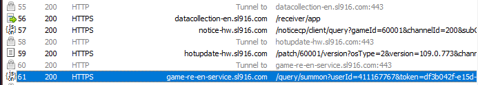

Есть три способа получить историю круток. Выбери наиболее удобный.
Программа автоматически перехватывает ссылку пока ты открываешь историю круток в игре. Ссылка копируется в буфер обмена и вставляется в трекер одним кликом.
Получи ссылку через Fiddler или авто-граббер и вставь прямо в трекер - файл скачивать не нужно, данные загрузятся автоматически.
Сохрани JSON-файл с историей круток через Fiddler или браузер и загрузи его напрямую в трекер.
Специальная утилита автоматически перехватывает ссылку на историю круток пока ты открываешь её в игре. Не требует настройки Fiddler. Скачать .exe
Если прокси всё же остался включён: Настройки → Сеть и интернет → Прокси → Настройка прокси вручную → выключи «Использовать прокси-сервер».
Если хочешь запустить Python-скрипт напрямую - нужны Python 3.10–3.12 и зависимости:
Если не хочешь использовать авто-граббер, ссылку можно получить вручную через Fiddler Classic. Скачать Fiddler

https://game-re-en-service.sl916.com/query/summon?userId=xxx&token=xxx